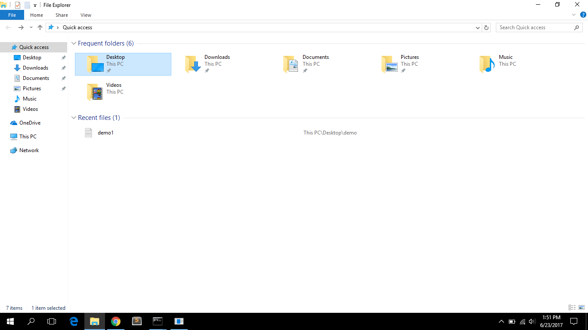

A Detour Through the Terminal
On day one, we briefly learned about the difference between the GUI (graphical user interface) and the CLI (command line interface). These are the two interfaces from which computers can receive instruction from humans.

So how do we get to this command line interface thing?
We can implement the command line interface using a program called Command Prompt on our PCs. Through Command Prompt, we'll be able to access our shell, a command interpreter. The most common shell, and the one used in UNIX based systems like Linux and Mac OS, is called bash. The equivalent to Command Prompt on UNIX systems is known as Terminal. The Command Prompt (or Terminal) is just a tool we use to view the shell, akin to using a browser to view the web. Windows 10 has the ability to run a Terminal emulator from the Command Line, so you can use the bash commands.
Let's Start! Basic Bash Commands
Open your Command Prompt by hitting the Windows key on the left side of the bottom row of your keyboard, typing in 'cmd' and pressing enter. You can also fire up your Command Prompt by mousing down to your tray and clicking on the black box icon showing C:\...
The prompt usually shows you some basic information, usually your username and hostname. It might look something like this:
C:\Users\MissionBit>
C: is the hard drive inside your computer, and Users is the Users folder, where all of the system's user accounts are kept. MissionBit is the user account you're currently logged into.
Next, type 'bash'
Now, you're using a bash shell inside Windows! It might look something like this:
MissionBit@Desktop-STQNDTL:
Windows 10 is the first edition of the Windows operating system that has included the capability to use a bash shell inside of the Windows operating system. You're doing amazing new things already!
Often, when you see an example of commands intended to be typed into the Terminal, it will start with a $ or a >. You don't actually type in those symbols; when you see something like $ pwd, it's just an indicator to the programmer that this command should be typed into the command line, not written in a file to be run later.
We can use a few commands to navigate through our computer's file system.
We'll learn how to navigate the file system using the command line. Type in the following to print your current working directory.
$ pwd
What does it give you? What does current working directory mean? How is this similar to your File Explorer program?
You can access your File Explorer program by either clicking on the file icon in your tray, or pressing the Windows key and typing 'file'
The result /Users/[yourUsername] is a file path representing your home directory - by default where you are when you login to your computer. If your computer has multiple logins, each user has their own home directory. A file path specifies a unique location in a file system expressed as a list of nested directories seperated by slashes. Files and folders can be represented by either absolute or relative paths.
Can you find your current directory in File Explorer?
Use [Alt + Tab] to switch between open programs, and open your home directory there. Click on the arrow next to 'This PC' - this expands a list of folders in the computer's main directory. N There are all the files and folders. Next, click on 'Users' - there is MissionBit. You can see all of the folders inside your home directory. How do we list them in the Terminal?
Time to [Alt + Tab] back over to your Command Prompt window that's running the bash shell. Now you can use the 'ls' command to see all the files in your home directory!
$ ls
The above lists the contents of the current directory by default. What does the below do?
$ ls /mnt/c/Users/MissionBit/Desktop
Use cd followed by the path of your file to change to a particular directory.
$ cd [filepath]
For example, if I have a folder called Projects in my Documents folder, the path would be Documents/Projects from my root directory. Thus, I would type:
$ cd Documents/Projects
to get into my folder u4sing command line.
The piece of text after the command is an argument to the ls subroutine (AKA a function). In this case a file path indicating which directory to list the contents of.
These are some of the most basic commands for getting around your file system.
When working from your home directory, the below should all do the exact same thing. Mouse over to see how the computer interprets each file path and write your own ls commands to test it out!
$ ls /Users/[yourUsername]/Desktop
$ ls ./Desktop
$ ls Desktop
$ ls ../[yourUsername]/Desktop
$ ls ../../Users/[yourUsername]/Desktop
Do you think the last three file paths are ABSOLUTE or RELATIVE?
In other words, will they be able to work anywhere? Or do they depend on what your current directory is?File Names 101
- File names are case-sensitive! (if you haven't noticed this yet)
- They can be any character (besides /)
- File extensions are the letters that go after the '.' in your file (letter.txt, corgi.jpg, index.html) and they are more for convenience than anything. When we see a .txt we know it's a text file. When a computer sees a file extension indicating a photo, they'll already have a default program to open your photo in.
Tips & Tricks: Short Cuts
- Up/Down Arrows: In your Terminal, hit the 'up' arrow. What do you see? Hit it again. You can use your up and down arrows to see the previous commands you've given to Terminal.
- Tab: Auto-completes file names for you
- Ctrl-a & Ctrl-e: Goes to the beginning and the end of the command, respectively
Exercise: Get comfortable with command line!
Make sure you are inside your Desktop directory; if you're not, use the cd command to navigate to it. Let's make a new folder with a file inside of it! Type mkdir and a space into the Terminal, followed by a folder name, like 'cats' or some name of your choice. It should look like this: mkdir catsHit enter to make a new file on your Desktop, and then ls to see the contents of that folder. Nothing there, right? Let's make a new file to put inside. Type touch demo.txt to make a new text file inside of your folder. Now, type 'ls' and press enter. There is the file you just made, inside your folder!Do this at least 3 times with a variety of folders. Try to use the short cuts above!
Exercise: Try some of these out!
As you may have guessed, there's a lot more commands. You definitely won't be expected to know them all but here are some useful ones for beginners.
Try them if you're curious! But remember to be careful with rm -rf
ls .
cd /
cd ..
cd ../..
ls
ls [directory]
mkdir [directory] = make a new directory
touch [filename.extension] = make a new file
mv [filepath] [new filepath] = move/rename file
cp [filepath] [new filepath] = copy file
rm [filepath] = remove file
rm -rf = remove a directory and all contents
Exercise: Deploy your project using Surge's CLI
We'll be using the command line to push your html website up into the interwebs using Terminal. We'll need Node installed so we can use the Node Package Manager to install Surge's command line interface.
- Using your Terminal, navigate (
cd) into the inside of the folder you want to publish. Rename your html fileindex.html - Check if Node is installed using your Terminal:
node --version - You should see some numbers (e.g.
v5.50) If it's not installed, please download and install it. - Install Surge CLI using NPM:
npm install --global surge The - Enter
surgeand you'll be prompted to make an account.

- Surge will deploy your
index.htmlfile for you and give you a random domain with which it is published to
--global means that we want the Surge CLI to be installed for the whole computer, not just for the directory we are in.
Here's a short video provided by Surge if you are stuck.
More Information:
Want to know more? Check out Learn CLI the Hard Way